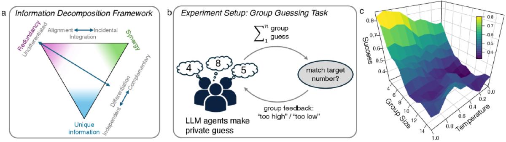

Why it matters왜 중요한가
"Multi-agent is better" is everywhere — but nobody has a principled test for when agents truly act as one.
"멀티에이전트가 더 낫다"는 말은 흔하지만, 에이전트가 언제 진짜 하나처럼 작동하는지에 대한 원칙적 검정은 없었다.
Most multi-agent claims rest on win-rates and intuition. This work asks the deeper question with tools borrowed from collective-intelligence research: does the group's future state carry information that no single agent can predict alone (synergy / emergence)? And critically — is that emergence steerable by prompt design, and does it actually help the task? The framework not only detects emergence but localizes it and separates spurious temporal coupling from performance-relevant cross-agent synergy.
대부분의 멀티에이전트 주장은 승률과 직관에 기댄다. 이 논문은 집단지성 연구의 도구를 빌려 더 깊은 질문을 던진다: 그룹의 미래 상태가, 어떤 개별 에이전트도 혼자서는 예측할 수 없는 정보를 담고 있는가(시너지/창발)? 그리고 핵심적으로 — 그 창발은 프롬프트 설계로 조향(steer) 가능한가, 또 실제로 과제에 도움이 되는가? 이 프레임워크는 창발을 탐지할 뿐 아니라 위치까지 특정하고, 가짜 시간적 결합과 성능 관련 교차 에이전트 시너지를 구분한다.

By the numbers핵심 숫자
(Fisher test, all conditions)창발 능력 존재
(Fisher 검정, 전 조건)
(vs. ≈0 in Plain/Persona)ToM가 Total Stability 상승
(Plain/Persona는 ≈0)
on success (p=0.014)시너지×중복성의
성공 효과 (p=0.014)
benefit (log-odds)중복성이 시너지 이득을
증폭 (로그-오즈)
(mediation, p=0.053)ToM → 시너지 경유 성능
(매개분석, p=0.053)
(GPT-4.1 + 4 others)검증 LLM 수
(GPT-4.1 + 4종)
Results — three prompts, three coordination regimes결과 — 세 프롬프트, 세 협응 양상
| Condition | Practical emergence실용적 창발 | Total Stability | Differentiation차별화 |
|---|---|---|---|
| Plain | p=1.5×10⁻¹⁶ | ≈0 (p>0.8) | noise-driven잡음 기반 |
| Persona | p=6.6×10⁻⁷ | ≈0 (p>0.8) | identity-linked정체성 연동 |
| ToM | p=0.02 | ↑ p=2.9×10⁻¹⁴ | stable roles안정적 역할 |
Plain & Persona look like crowds — strong moment-to-moment synergy but near-zero stable, coordinated structure. ToM turns them into a collective: a predictable, goal-aligned group state. Yet triadic gain G3 stays ≈0 under Persona/ToM — the coupling is "mean-field" pairwise alignment, not irreducible 3-way complexity.
Plain·Persona는 '무리'처럼 보인다 — 순간적 시너지는 강하지만 안정적·협응적 구조는 거의 0. ToM는 이를 '집단'으로 바꾼다: 예측 가능하고 목표 정렬된 그룹 상태. 다만 Persona/ToM에서 삼중 이득 G3는 ≈0 — 결합은 "평균장(mean-field)" 쌍별 정렬이지, 환원 불가능한 3자 복잡성은 아니다.
In one diagram한 장의 그림
Idea: measure emergence, then steer it아이디어: 창발을 측정하고, 조향하라
PID of time-delayed MI
Decompose how much of the group's future is predicted by parts together vs. alone. Two criteria: emergence capacity (pairwise dynamical synergy Synij) and a practical criterion on a macro signal (group error). Permutation nulls (row-shuffle, time-shift) separate real structure from artifacts.
그룹의 미래가 부분들의 합으로 얼마나 예측되는지를 분해. 두 기준: 창발 능력(쌍별 동적 시너지 Synij)과 거시 신호(그룹 오차)에 대한 실용적 기준. 순열 귀무분포(행 셔플·시간 이동)로 진짜 구조와 인공물을 분리.
Persona + Theory of Mind
Three prompt interventions on the same task: Plain, Persona (identity), ToM (predict others). No agent ever sees another's guess — all coordination must emerge from feedback + social reasoning, isolating the prompt as the causal lever.
같은 과제에 세 프롬프트 개입: Plain, Persona(정체성), ToM(타인 예측). 어떤 에이전트도 남의 추측을 보지 못한다 — 모든 협응은 피드백 + 사회적 추론에서 창발해야 하며, 이로써 프롬프트를 인과적 지렛대로 분리한다.
How it works어떻게 작동하나
- Set up the no-comm game무통신 게임 구성N agents privately propose integers; their sum must equal a hidden target. Only group-level "too high / too low" feedback is returned — success demands complementary, not identical, strategies.N명의 에이전트가 비공개로 정수를 제안, 합이 숨겨진 목표값과 같아야 한다. "너무 높음/낮음" 그룹 피드백만 반환 — 성공하려면 동일이 아닌 상보적 전략이 필요.
- Convert guesses to coordination signals추측을 협응 신호로 변환Each guess is recast as a deviation from an equal-share contribution; the group error becomes the macro signal V. Quantile-bin, then estimate entropy with Miller–Madow / Jeffreys corrections.각 추측을 균등분담 대비 편차로 재정의하고, 그룹 오차를 거시 신호 V로 삼는다. 분위수 비닝 후 Miller–Madow / Jeffreys 보정으로 엔트로피 추정.
- Test emergence vs. nulls귀무분포 대비 창발 검정Compute emergence capacity, practical criterion, and triadic gain G3 with time lag ℓ=1; bias-correct against permutation nulls; Wilcoxon tests check the corrected values exceed zero.창발 능력·실용적 기준·삼중 이득 G3를 시간지연 ℓ=1로 계산, 순열 귀무분포로 편향보정, Wilcoxon 검정으로 보정값이 0을 넘는지 확인.
- Link to performance, causally성능과 인과적으로 연결Compute synergy/redundancy on early rounds, correct sample-selection with inverse-probability weighting, and run causal mediation: ToM → ↑synergy → ↑success.초기 라운드에서 시너지/중복성을 계산, 역확률 가중으로 표본선택 보정, 인과 매개분석 수행: ToM → 시너지↑ → 성공↑.
What to take away그래서, 가져갈 것
Emergence is steerable. A single ToM clause — "think about what others will do" — moves an LLM group from chaotic aggregate to stable, goal-directed collective. Prompt design is a control parameter for coordination.
창발은 조향 가능하다. "남이 뭘 할지 생각하라"는 한 줄 ToM 지시만으로 LLM 그룹이 혼란스러운 집합에서 안정적·목표지향적 집단으로 전환된다. 프롬프트 설계가 곧 협응의 제어 변수.
Synergy alone isn't enough. Neither synergy nor redundancy predicts success on its own — only their interaction does. Good teams balance shared alignment (redundancy) with useful diversity (synergy).
시너지만으론 부족. 시너지도 중복성도 단독으론 성공을 예측 못 한다 — 오직 둘의 상호작용이 한다. 좋은 팀은 공유된 정렬(중복성)과 유용한 다양성(시너지)을 균형 잡는다.
A real diagnostic, not a vibe. The PID-TDMI framework gives a falsifiable, permutation-tested measure of where emergence lives — usable to audit any multi-agent system, not just this game.
분위기가 아니라 진짜 진단 도구. PID-TDMI 프레임워크는 창발이 어디 있는지를 반증가능·순열검정된 척도로 제공한다 — 이 게임뿐 아니라 어떤 멀티에이전트 시스템도 감사 가능.
ToM is the bottleneck. Small Llama-3.1-8B fails to develop goal-directed synergy, and reasoning model Qwen3 hits "paralysis under coordination ambiguity" — endless chains-of-thought. Coordination rides on Theory-of-Mind capacity.
병목은 ToM 능력. 소형 Llama-3.1-8B는 목표지향 시너지를 못 만들고, 추론모델 Qwen3는 "협응 모호성 하 마비"(무한 사고연쇄)에 빠진다. 협응은 마음이론 능력에 달려 있다.